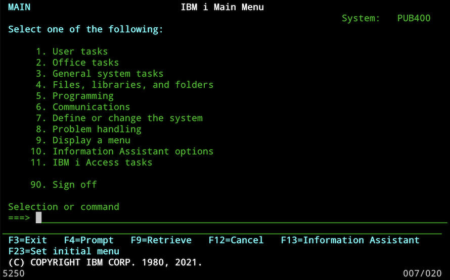

This is the homepage for the free tn5250 emulator. tn5250 is a curses-based telnet client client for the IBM i operating system (and previous iSeries, System i, and AS/400 systems) which emulates 5250 terminals and printers. This function is similar as that provided by the 5250 emulator in IBM i Access Client Solutions except instead of running as a Java-based GUI application, it runs inside a standard terminal.
Here is a screenshot of tn5250 version 0.17.6 connected to pub400.com:
Please report any bugs in tn5250 on GitHub
tn5250 source archives can be downloaded from GitHub. The most recent version is 0.17.6 and is available here.
If you don’t want to have to compile the program yourself, many operating system and repositories provide pre-compiled versions:
There’s a page of links to related documentation on this site.